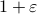
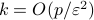

Zeyuan Allen-Zhu (Microsoft Research)Oct 9, 2017. Title and AbstractOptimal Experimental Design via A New Regret Minimization Framework The experimental design problem concerns the selection of k points from a potentially very large design pool of p-dimensional vectors, so as to maximize the statistical efficiency regressed on the selected k design points. We achieve  approximations to all popular optimality criteria for this problem, including A-optimality, D-optimality, T-optimality, E-optimality, V-optimality and G-optimality, with only  design points. In contrast, to the best of our knowledge, previously (1) no polynomial-time algorithm exists for achieving any approximations for D,E,G-optimality, and (2) the algorithm achieving approximation for A/V-optimality require . Joint work with Yuanzhi Li, Aarti Singh, and Yining Wang. BioZeyuan Allen-Zhu is a researcher at MSR Redmond. Previously he received an Sc.D. from MIT and spent two years as a postdoc at Princeton and IAS. He works on the mathematical foundations of optimization and machine learning, and applies them to subjects across data mining, theoretical computer science, and statistics. |